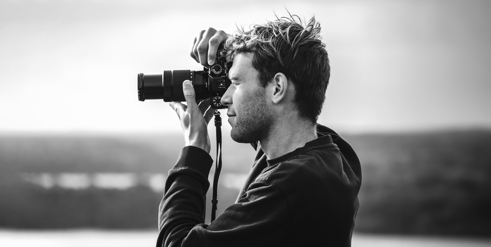
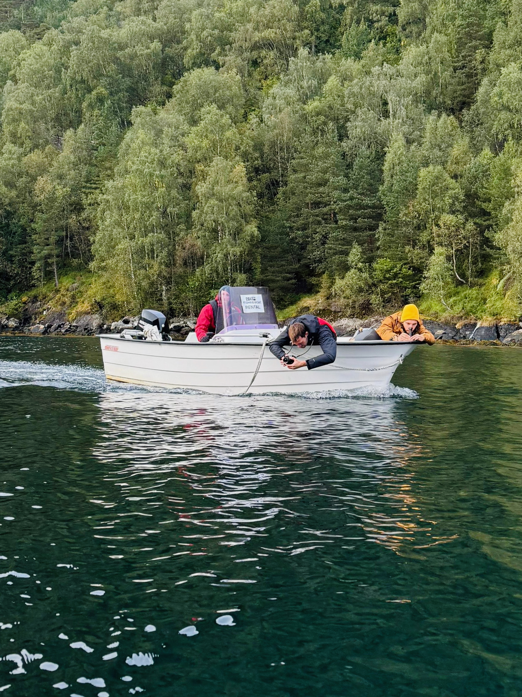
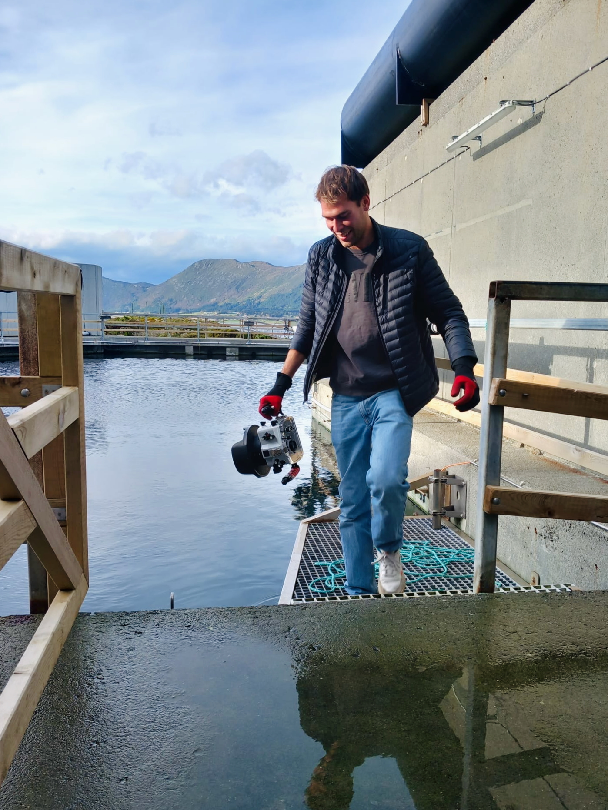
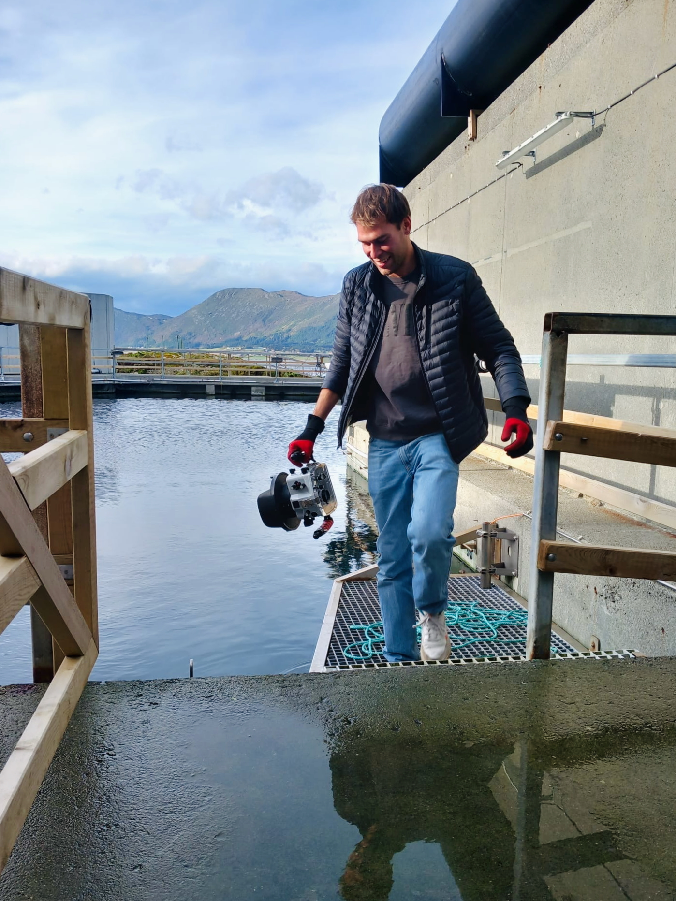
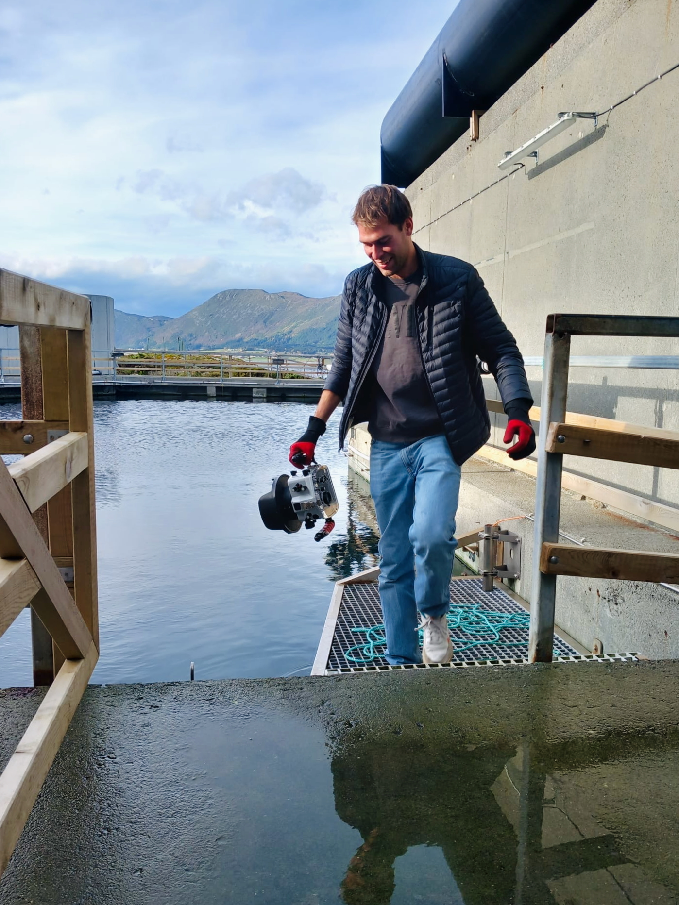

Leon Rohrwild

Ich bin freiberuflicher Filmemacher und Fotograf – mit einem Blick für starke Bilder und authentisches Storytelling.
Schon während meiner Schulzeit begann ich mit der Produktion von Werbe- und Imagefilmen. Nach meiner Ausbildung zum Mediengestalter studiere ich aktuell Multimedia an der Fachhochschule Kiel und arbeite parallel an vielseitigen Projekten.

 

